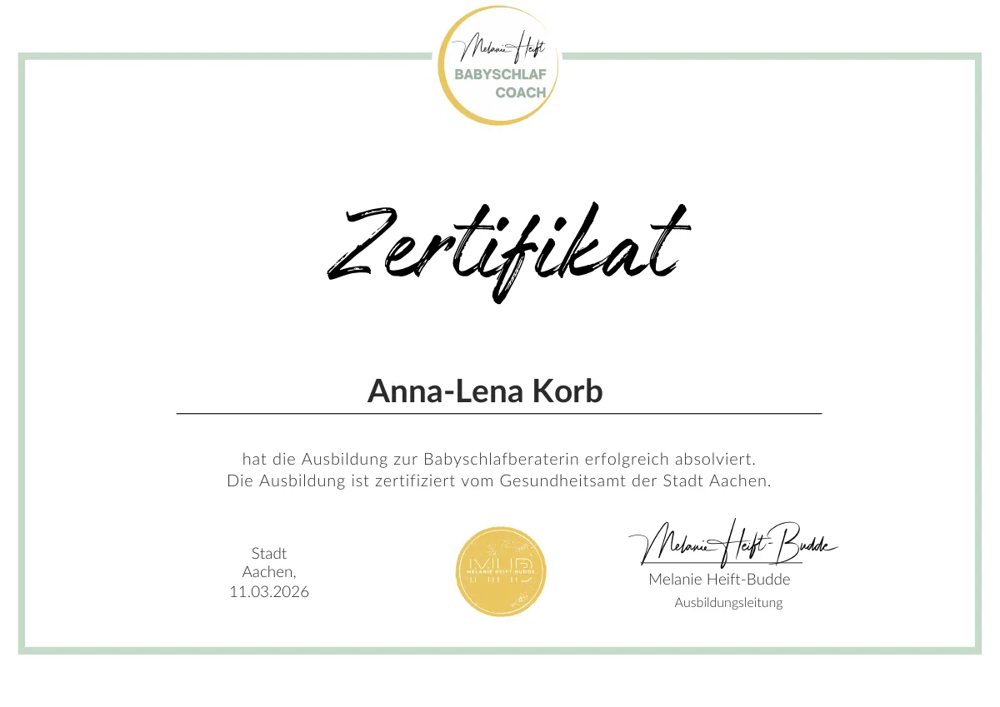

Ruhigere Nächte mit Nähe
und einem Plan, der zu euch passt
Ich berate Familien mit Babys und Kleinkindern persönlich, online in ganz Deutschland und ohne Schreienlassen.
Babyschlafberatung online in ganz Deutschland, mit Nähe und ganz ohne Schreienlassen
Wenn das Einschlafen jeden Abend ewig dauert und ihr nachts kaum noch am Stück schlaft, helfen gut gemeinte Tipps von allen Seiten meistens wenig. Was dann hilft, ist jemand, der sich eure Situation in Ruhe anhört und euch beim Verändern begleitet.
Mein Name ist Anna-Lena Korb, ich bin zertifizierte Babyschlafberaterin und arbeite seit 2010 als Tagesmutter. Ich begleite Familien mit Kindern bis sechs Jahre, zum Beispiel bei langen Einschlafabenden, bei häufigem nächtlichen Aufwachen, wenn der Tagschlaf nicht klappt oder das Einschlafen nur noch mit einer bestimmten Person funktioniert.
Beraten wird online per Zoom oder Telefon, ob ihr nun in Hamburg, Berlin, Köln oder München wohnt oder irgendwo auf dem Land. Wer im Raum Würzburg lebt, kann mich auch persönlich treffen. Das erste Gespräch ist kostenlos und unverbindlich.

Meine Schlafberatung im Überblick
Ein Baby mit vier Monaten hat andere Themen als ein Kindergartenkind. Hier findet ihr die Seite, die zu eurer Familie passt.
Wenn der Schlaf den ganzen Familienalltag bestimmt
Wahrscheinlich seid ihr ziemlich müde, und von den vielen Ratschlägen, die sich gegenseitig widersprechen, vermutlich auch.
Vielleicht zieht sich bei euch der Abend über Stunden, weil euer Kind einfach nicht einschläft, oder es wacht nachts so oft auf, dass an Durchschlafen nicht zu denken ist. Bei anderen klappt das Einschlafen nur mit Mama oder nur mit Papa, oder Kita-Start und Tagschlaf haben den ganzen Ablauf durcheinandergebracht.
Das schauen wir uns gemeinsam an, mit Blick auf euer Kind und euren Alltag. Wer woran schuld ist, spielt dabei keine Rolle. Bei Neugeborenen geht es vor allem um Orientierung und einen sicheren Schlafplatz.
Wie ich genau arbeite, steht auf der Seite zur Schlafberatung.
Meine ArbeitsweiseWie die Beratung abläuft
Vom ersten Gespräch bis zur Begleitung im Alltag wisst ihr immer, was als Nächstes kommt.
Kennenlernen
20 Minuten, kostenlos. Ihr erzählt mir, was euch gerade belastet.
Eure Situation verstehen
Fragebogen und Beratungsgespräch geben uns ein genaues Bild davon, wie euer Alltag aussieht.
Ein Plan für euch
Ihr bekommt konkrete nächste Schritte schriftlich, abgestimmt auf das Alter eures Kindes.
Begleitung
In der gebuchten Zeit könnt ihr mich jederzeit anschreiben, und wenn etwas nicht klappt, ändern wir den Plan.
Beratung von eurem Sofa aus, egal wo ihr wohnt
Wir sprechen per Zoom oder am Telefon, ihr bleibt also einfach zu Hause. Beide Elternteile können dabei sein, notfalls auch von zwei verschiedenen Orten aus, und niemand muss mit einem müden Baby ins Auto steigen.
Fragen, die zwischen den Terminen auftauchen, schreibt ihr mir in der gebuchten Zeit per WhatsApp. Meistens antworte ich innerhalb von 24 Stunden.
Was die Beratung kostet
Das Kennenlernen ist kostenlos. Danach könnt ihr euch in Ruhe überlegen, ob euch eine einzelne Sprechstunde reicht oder ob ihr euch über mehrere Wochen begleiten lassen wollt. Alle Preise sind Gesamtpreise, es gibt kein Abo, und nichts verlängert sich automatisch.
Alle Leistungen und Pakete| Angebot | Leistung | Preis |
|---|---|---|
| Kennenlernen | 20 Minuten per Zoom oder Telefon | kostenlos |
| Schlafsprechstunde | 45 Minuten für ein konkretes Thema mit kurzer schriftlicher Zusammenfassung | 89 € |
| Basis | 60 Minuten Beratung, schriftlicher Plan und 7 Tage Begleitung | 149 € |
| Intensiv | 60 Minuten Beratung, Plan, 3 Folgegespräche und 3 Wochen Begleitung | 299 € |
| Premium | 60 Minuten Beratung, Plan, 5 Folgegespräche und 6 Wochen Begleitung | 479 € |
„Dass euer Kind zum Einschlafen Nähe braucht, ist völlig in Ordnung, und ruhigere Abende dürft ihr euch trotzdem wünschen.“
Wer euch berät
Seit 2010 betreue ich als qualifizierte Kindertagespflegeperson Babys und Kleinkinder, rund 100 Kinder waren es bisher. Lange Einschlafabende kenne ich außerdem von meinem eigenen Kind.
2026 habe ich zusätzlich die Ausbildung zur Babyschlafberaterin abgeschlossen. Von mir bekommt ihr eine ehrliche Einschätzung und einen konkreten Plan, und beim Umsetzen lasse ich euch nicht allein.
Ratgeber für müde Eltern
Hier findet ihr Artikel zu den Fragen, die Eltern besonders oft beschäftigen, jeweils mit Links zu den Quellen. Eine persönliche Beratung ersetzen sie natürlich nicht.


Für welche Familien ist die Babyschlafberatung gedacht?
Für Eltern von Babys und Kindern bis sechs Jahre, die sich ruhigere Abende oder Nächte wünschen und ihr Kind dafür nicht schreien lassen möchten. Ob euer Kind ein paar Wochen alt ist oder schon in den Kindergarten geht, Ziele und Tempo richten wir nach ihm und nach eurem Alltag.
Wie läuft die Beratung online ab?
Nach dem kostenlosen Kennenlernen bekommt ihr je nach Paket einen Fragebogen, bei Intensiv und Premium zusätzlich ein Schlafprotokoll. Das eigentliche Beratungsgespräch führen wir per Zoom oder Telefon, und danach bekommt ihr euren schriftlichen Plan. Wie das im Einzelnen aussieht, steht unter Ablauf.
Was unterscheidet deine Beratung von Schlafprogrammen?
Ich arbeite mit keinem festen Programm, das bei jedem Kind gleich abläuft. Wir schauen uns euer Kind an, euren Tag und das, was ihr verändern wollt. Daraus wird ein Plan in kleinen Schritten, bei dem ihr euer Kind weiter trösten und nah bei ihm sein könnt.
Wie schnell ist ein Termin möglich?
Für das Kennenlernen brauche ich mindestens sieben Tage Vorlauf. Da ich höchstens drei Familien gleichzeitig begleite, besprechen wir im Gespräch, wann eure Beratung losgehen kann.
Kostenloses Kennenlernen vereinbaren
Erzählt mir, was eure Nächte gerade so schwer macht. Im kostenlosen Kennenlernen haben wir 20 Minuten Zeit, um zu schauen, ob und wie ich euch helfen kann, per Zoom oder am Telefon und egal, wo in Deutschland ihr wohnt.
- Telefon0173 2584141
- E-Mailbabyschlafcoach.annalena@gmail.com
- GesprächszeitenMo–Fr 17–19 Uhr, Sa 9–13 Uhr
- StandortEisingen bei Würzburg, online in ganz Deutschland